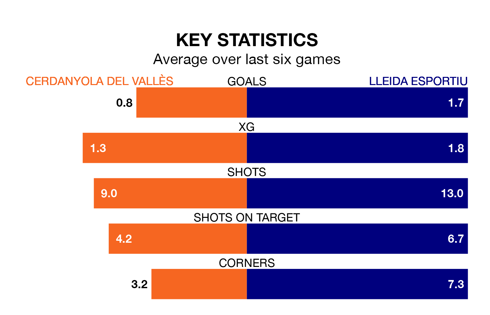

Cerdanyola del Vallès host Lleida Esportiu in Sunday's match looking to bounce back from defeat last time out in the Segunda División RFEF Group 3.
Cerdanyola del Vallès, who sit 15th in the league after 31 games, fell to a 0-1 away defeat to CF Badalona on April 13.
They face a Lleida Esportiu side who picked up a win in their last match, a 3-1 victory against Penya Independent, and who sit first in the table.
With 44 goals in 31 games so far this season, Lleida Esportiu are the league's joint-third-highest scorers with 1.4 goals per game. And they are conceding fewer than average, letting in 28 goals at a rate of 0.9 per game.
Cerdanyola del Vallès, meanwhile, are below average scorers, with 1.1 goals per game, compared to a league average of 1.2. They have conceded 1.3 goals per game.
In the last three years, Cerdanyola del Vallès and Lleida Esportiu have played each other on three occasions. Cerdanyola del Vallès won two of them and Lleida Esportiu one.
Their last meeting was on December 10, when Lleida Esportiu won 3-0 at home.
The home team are in mixed form in the Segunda División RFEF Group 3, with three wins and a draw from their last six games.
With three wins and three losses over that period, the visitors' form is slightly worse – they have taken nine points from 18, compared to Cerdanyola del Vallès's 10.
Updated: 15:40 (UTC), 18/04/24